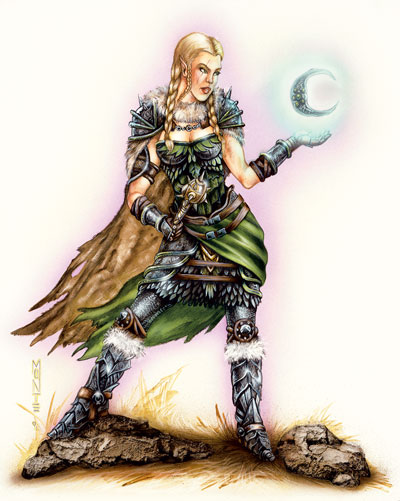

他是神强壮的右手。他是女神的声音。他是更强大力量的仆人。神使是他的信仰的代言人，他为服侍力量或信仰而行动。神使不受教条与教会限制，除非这是来自他的上级。
牧师与圣武士可以成为出色的神使，虽然他们不是只限成为这个职业。
不同的神需要不同的能力与观点。神使经常被他的神祉派往其他位面去处理重要的或棘手的事务。在这种场合下，他们会很乐意邀请他的朋友一起行动。
低等级的神使经常在他自己原来居住的位面和他的神祉所在的位面活动。当他到了一定的等级，他便会经常出现在其他位面以完成神祉交给他的任务。
生命色：D4
职业需求
为了成为一名神使，角色必须满足以下全部条件：
基本攻击加值：+4
技能：知识（宗教）7级
法术：可以施展2级神术
特殊要求：神使必须和他的神祉或直接代言人（有时候其他神使会代表神祉行动）友好的沟通。并且想成为神使的角色必须在成为神使过程中完成一项由他的神祉指派的任务。一旦角色完成了这项任务，他就可以在这之后的的任何时候成为一名神使。
一旦角色踏上这条道路（成为一名1级神使），神使将不能成为另一名神祉的神使。
职业技能:
神使的职业技能有：专注（体质）、手艺（智力）、交涉（魅力）、易容（魅力）、收集信息（魅力）、医疗（感知）、威胁（魅力）、知识（宗教）（智力）。
可以学习的技能包括：专业（感知）、搜索（智力）、察言观色（感知）、辨识法术（智力）、侦查（感知）、使用魔法装置（魅力）。请见玩家手册第四章：技能以获得各技能的详细描述。
每个等级的技能点数：4+智力调整值
职业特征
下列均为神使进阶职业的职业特征。
擅长武器与防具：神使擅长所有的简单武器和各种类型的防具。并且，神使获得它信仰的神祉的天赋武器专精，如果它原本没有这项专精的话。
获准领域：神使获得他的神祉所提供领域列表中的一个领域，这也将带给他这个领域的神授力量。
曾经是牧师的神使将获得第三领域，这样他以后可以在准备每个等级的领域法术时选择新获得的领域的领域法术。
不管他原先的职业是什么，神使都将获得他选择的领域的神授力量。如果一项神授能力会使用到牧师等级，或可以进行超度或喝斥，使用牧师等级与神使等级的总和决定这项能力的效果。
联系（超自然能力）：一个2级以上的神使能被他的神祉或他的神使进行心灵联系，通常用于将详细的知识与命令告知神使。这种联系是单向作用的，该神使不能起始这个联系、质疑这个命令或要求明确说明。这种联系依赖于神祉：梦境、愿景或幻象。这些形式都有可能成为联系的方式。从神祉而来的联系不会干扰神使的正常行动。
每日法术：神使不断在魔法方面受训，也从神祉处获得力量。在第2、4、6、8、10级的时候，神使可以获得每日法术，数量就如同他在获得进阶职业之前的施法职业升级时的获得量。这个数量是指将神使等级计入原施法职业的职业等级后，决定的每日法术量。但是他不会获得原职业的其他好处。
如果角色之前有一个以上的施法职业，那么在每次升级时，他都必须指定这次的被日发数量增加是对于哪个施法职业的，并由此计算新的每日法术量。
威胁灵气（特异能力）：从等级3开始，神使得到引发无形且隐形的威胁灵气的能力，这道灵气可以削弱20英尺内的敌对生物。所有试图攻击神使的生物必须通过意志检定（DC等于神使的角色等级）。豁免检定失败的生物的攻击检定、技能检定与豁免检定上将受到-2的惩罚一整天，直到他成功伤害到引发灵气的神使。通过了初始的豁免检定与伤害到过神使的生物在一天内对这个神使的灵气免疫。
神之馈赠：在第3、6和9级时，神祉给与神使一项礼物。不同神祉的礼物是不一样的，但是通常是允许神使如同类法术能力一样的施放领域神术，神祉提供一项神使的等级或更低的法术。换句话说，一个3级神使可能得到一个1级、2级或3级的领域内的法术作为他的类法术能力。神使每日可以使用一次这个能力。类法术能力的功能等同于神使等级的牧师使用相同的神术。
转变外表（特异能力）：在等级4，神使会显现出卓越的身体以适应于神祉的要求。对于善良阵营的神祉，这种形态通常是金色皮肤、头发或眼睛。邪恶的神祉的神使则可能得到头部的角或带刺的尾。中立神祉可能使皮肤呈现铜色或银色，同时还可能包括绿色的瞳孔与树皮一样的头发。元素力量可能通过给皮肤添加反映介入的元素的纹理而改变神使的外貌。这些所有改变都是永久的，虽然易容或法术可能战士掩盖它。
通神术（类法术能力）：5级或更高的神使每周可以激活这项类法术能力一次。这项能力的效果就如同一个等同于神使等级的牧师释放同名法术。
异界传送至神祉位面（类法术能力）：5级或更高的神使每天可以使用一次异界传送由他所在的位面传送至他的神祉的位面。这项能力的效果就如同一个等同于神使等级的牧师释放同名法术。
异界传送至任意位面（类法术能力）：达到7级后，神使可以使用异界传送传送至存在的任意位面，就如同同名法术一样，每天一次。这项能力的效果就如同一个等同于神使等级的牧师释放同名法术。
接见（类法术能力）：8级以上的神使每年最多可以请求两次神祉的接见，效果视同持续时间时间加倍的通神术，这允许询问2倍于神使人物等级个问题。
阵营转换：如果神使与神祉不是同一阵营，当他达到8级时将会转变为神祉的阵营。
神秘实体：在第9级，神使成为魔法生物。他将被视同他的神祉位面的异界生物而不是类人生物。如此，魅惑人类将不会对他产生影响。并且，神使获得20/+1的伤害减免。这种伤害减免不会与其他形式的伤害减免叠加。
不管这个异界生物的状态如何，如果被杀，神使仍能从死亡中复原。
异界之门（类法术能力）：10级神使可以每天一次启动这项类法术能力（如同同名法术，除非这只是到达神使所选的神祉的位面）。这项能力的效果就如同一个等同于神使等级的牧师释放同名法术。
堕落神使
不是所有追随神祉的人都能达成神祉的目标。这可能是他被驱逐出（或自愿退出）为神祉服务的工作。成为堕落神使的结果如下所述：
角色失去所有的通神术、异界之门与接见能力。
前神使保留他神秘实体属性、变化外表与任何神之馈赠。
根据不同的离开原因，前神使可能会（也可能不会）被这个神的其他神祉猎杀。
角色不能再次加入神使职业。其他神祉不会收容前神使。
神使可以被神祉重新接纳，这需要他完成由DM指定的一些卓著的任务。通常神祉重新接纳的过程会更加苛刻，以测试堕落神使的诚意。
表 3-3：神使
职业等级 基本攻击加值 强韧检定 反射检定 意志检定 特殊能力 每日法术
1 +0 +0 +0 +2 获准领域
2 +1 +0 +0 +3 联系 +1施法者等级
3 +2 +1 +1 +3 威胁灵气、神之馈赠
4 +3 +1 +1 +4 改变外表 +1施法者等级
5 +3 +1 +1 +4 通神术、异界传送至神祉位面
6 +4 +2 +2 +5 神之馈赠 +1施法者等级
7 +5 +2 +2 +5 异界传送至任意位面
8 +6 +3 +3 +6 会见、阵营转换 +1施法者等级
9 +6 +3 +3 +6 神秘实体、神之馈赠
10 +7 +3 +3 +7 异界之门 +1施法者等级